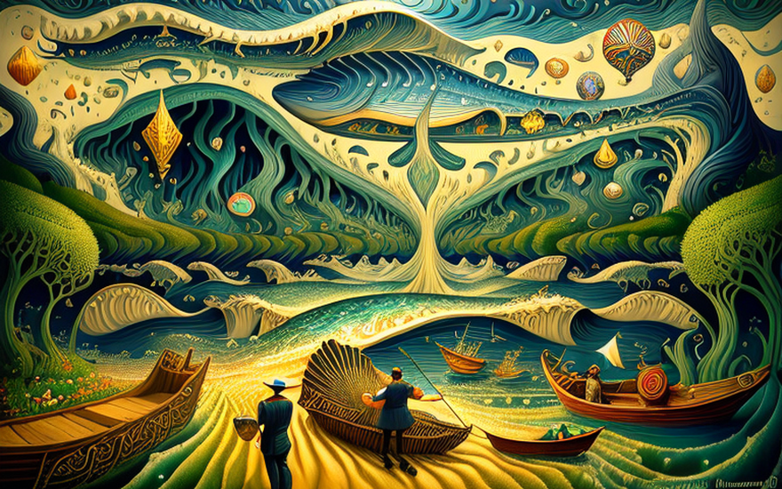
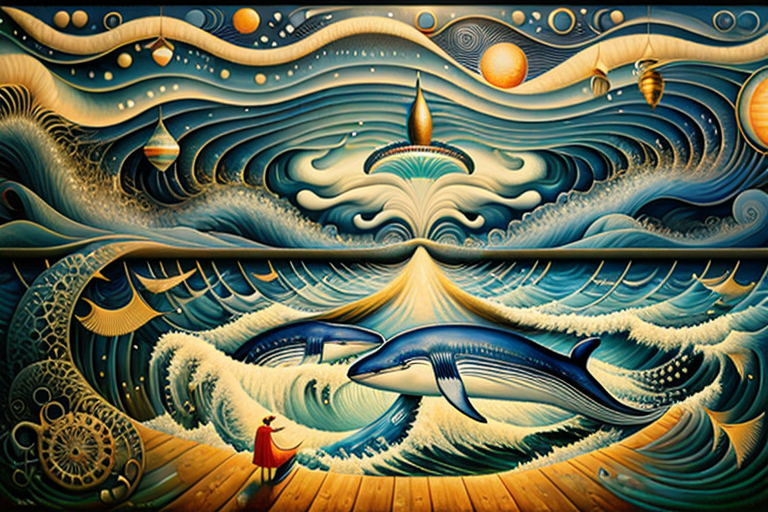

Whale’s feast on optical fibers
HOME
Table of Contents
The belly of the beast

Once upon a time, there lived an electrical engineer named Johan. A man of tinkering prowess, he could mend circuits with a flick of his wrist and tame the wildest electrical beasts with a single nod of his head. But alas, fate had a most peculiar twist in store for him.
One fateful day, as Johan was testing his latest invention—a revolutionary toaster that could sing opera arias while browning bread—he found himself inexplicably transported to the darkest depths of the ocean. And there, in the belly of a gargantuan whale, he stood, bewildered and drenched in the unsavory juices of digestive chaos.
Johan was a practical man, always armed with his trusty multimeter and a pocket full of resistors. But here, in the moist confines of the whale’s stomach, he found himself faced with an entirely different kind of puzzle. How does one pass the time while trapped in the belly of a leviathan, you might ask? A most perplexing conundrum indeed.
In his attempts to find solace amidst the sea of gastric juices and undigested calamari, Johan discovered that he was not alone in his predicament. There, amidst the floating debris and half-digested flotsam, he encountered an odd assortment of characters—fellow wanderers who had fallen victim to the whims of aquatic fate.
First, there was Melvin the Mime, a silent troubadour trapped in a never-ending performance of trapped-in-a-whale mime routine. He mimed his way through the tedium, hoping that one day the whale would tire of his silent theatrics and expel him back into the realm of the living.
Then there was Ethel the Eccentric, a flamboyant fortune teller who had predicted her own misfortune but failed to heed her own advice. She filled the gloomy atmosphere with her dramatic prophecies and mystical gestures, much to the chagrin of her fellow captives.
And let us not forget the bewildered duo of Bob the Botanist and Hortense the Harpist, who had stumbled upon each other amidst the slimy entrails of the whale. Bob, with his passion for botany, had managed to cultivate a small garden of algae and seaweed within the confines of their floating prison, while Hortense plucked her harp in a desperate attempt to drown out the echoing gurgles of the whale’s digestive system.
Johan, being the practical soul that he was, assessed the situation with a raised eyebrow and a sigh of resignation. “Well, my friends,” he declared, holding up a soldering iron as if it were a scepter, “if we are to while away the endless months trapped within this aquatic beast, we must find a way to bring order to this chaotic existence.”
And so, with his trusty multimeter in hand, Johan set about transforming their dreary surroundings into a makeshift laboratory of sorts. He wired together bits and bobs salvaged from the remains of previous occupants—a flickering light bulb here, a water-powered generator there—to create a semblance of civilization amidst the whale’s belly.
Melvin the Mime found himself a role as the designated circuit tester, using his silent gestures to indicate whether the contraptions were working or in dire need of a swift kick. Ethel the Eccentric, with her flair for the dramatic, assumed the role of the official timekeeper, reciting the minutes and hours in a voice that carried through the watery depths.
Bob the Botanist, ever the green-thumbed adventurer, devised a system to cultivate their own food within the whale’s gullet, creating a miniature ecosystem that sustained them all. Hortense the Harpist lent her musical talents to the cause, composing whimsical symphonies that resonated through the walls of their unconventional abode.
Whale-wired

As Johan, the ingenious electrical engineer, surveyed their makeshift laboratory with a mix of pride and bemusement, a strange rumbling reverberated through the whale’s cavernous stomach. It was a sound unlike any they had heard before, a cacophony of clicks and whirs that echoed through the fleshy confines.
The source of this commotion soon became apparent as the whale, driven by an insatiable appetite, devoured a vast amount of optical fiber cables that lay strewn across the ocean floor. These cables, intended to provide internet connectivity to the farthest reaches of the world, had now become an unexpected feast for the insatiable leviathan.
Johan, his curiosity piqued, gingerly extracted a length of the fiber cable from the whale’s digestive mess. As he inspected it, a mischievous smile crept across his face. “My friends,” he exclaimed, holding the fiber cable aloft, “it seems our predicament has taken a most intriguing turn. We have stumbled upon the very essence of connectivity within the bowels of this beast!”
His companions, Melvin, Ethel, Bob, and Hortense, looked at him with a mix of confusion and anticipation. How could the internet exist within the confines of a whale’s stomach? And what purpose could it serve in their fantastical world?
Johan, with his characteristic twinkle in his eye, began to explain. “You see, dear friends, these optical fibers carry the power of communication. By connecting them to our makeshift contraptions and instruments, we can tap into the vast expanse of knowledge, ideas, and entertainment that the internet has to offer!”
The others gathered around, their eyes wide with both wonder and confusion. Melvin the Mime, forever trapped in a silent pantomime, conjured imaginary images of a world connected by invisible threads. Ethel the Eccentric, her dramatic flair undeterred by their circumstances, prophesied of a future where information flowed freely, even within the belly of a whale.
Bob, the ingenious botanist, found a way to merge the algae and seaweed ecosystem with the fiber cables, creating a symbiotic relationship where information and nourishment intertwined.
Hortense, her fingers itching to pluck the strings of her harp, smiled at the thought. “And the music! Oh, the melodies and harmonies we shall discover! We can share our compositions, collaborate with musicians afar, and serenade the world from within the belly of this leviathan!”
And so, the ragtag group of captives embraced this unexpected gift from the devouring whale. Johan, with his expertise in electrical engineering, worked tirelessly to fashion a makeshift network hub using salvaged circuitry and the whale’s intestinal gasses as a power source. The optical fibers were carefully spliced and connected to their contraptions, allowing them to access the vast expanse of the digital world.
Within the whale’s belly, a cacophony of activity ensued. Melvin, the silent circuit tester, confirmed connections with invisible gestures, while Ethel, the eccentric fortune teller, proclaimed the arrival of each data packet with grandiose prophecies. Bob’s botanical garden thrived with newfound knowledge, aided by online tutorials and virtual consultations, and Hortense’s harp played melodies inspired by musical compositions spanning centuries.
From chases to chords

And so it came to pass that word of the whale’s belly, filled with a makeshift laboratory and an internet connection like no other, reached the ears of the formidable barracuda. This barracuda, an embodiment of piscine fury, patrolled the depths with unyielding determination. Its sleek, silver body darted through the water with lightning speed, its sharp teeth ready to defend its precious domain.
Whales, with their insatiable appetite and little regard for the consequences, had often stumbled upon the tantalizing feast of optical fibers lying beneath the waves. But now, with the barracuda as their relentless pursuer, their feasting days were numbered.
Upon hearing the audacious tale of the whale-turned-laboratory, the barracuda’s eyes gleamed with both curiosity and fury. How dare these creatures, these captives of the great leviathan, dare to feast upon the very cables it guarded so fiercely? It would not stand for such insolence!
With a flick of its powerful tail, the barracuda set off on a relentless pursuit. It weaved through the open sea, its razor-sharp teeth glinting in the sunlight, as it tracked the faint vibrations of the optical fibers. The chase was on, and no whale, no matter how massive, could evade the barracuda’s wrath.
The whale, oblivious to the approaching danger, continued its journey through the ocean depths, unaware of the predator nipping at its heels. Meanwhile, within its belly, Johan and his companions reveled in their newfound connection to the outside world. They exchanged messages with far-flung friends, explored the vast expanse of knowledge, and even watched whimsical performances through live streams.
But as the barracuda closed in, the whale’s peaceful existence was shattered. The barracuda’s ferocity and determination shook the whale to its very core. It swam faster, desperately trying to evade the swift hunter, but the barracuda was relentless in its pursuit.
The chase led them through a conglomeration of small islands, where the barracuda’s agility was put to the test. It darted between the rocky outcrops and swiftly maneuvered through treacherous currents, never letting the whale out of its sight. The islands trembled under the force of their movements, and the seas churned with their epic struggle.
Meanwhile, Johan and his companions, caught in the chaotic maelstrom, clung to their contraptions and instruments for dear life. Their makeshift laboratory rattled and shook, but they remained steadfast in their determination to preserve their newfound connectivity.
As the battle raged on, it became clear that the whale, burdened by its enormous size, could not outpace the barracuda forever. The barracuda’s relentless pursuit was wearing down the great leviathan, causing it to slow and falter. The end seemed inevitable.
Johan, the practical electrical engineer, pondered the situation. “My friends, it seems we have unwittingly become embroiled in a battle for control over these optical fibers. While we revel in the wonders of the internet, the whales are lured by its gastronomic appeal, and the barracuda defends it with unrivaled tenacity.”
Melvin, the silent mime troubadour, gestured frantically, indicating that their sanctuary might soon be compromised. Ethel, the eccentric fortune teller, saw visions of turmoil and chaos. Bob, the green-thumbed botanist, fretted over the safety of their underwater garden, nurtured by the abundance of knowledge they had accessed. And Hortense, the harpist, feared the loss of their melodious connection to the outside world.
With urgency in their hearts, they devised a plan—a plan to mediate the conflict, if only for their own sake. They would become ambassadors of peace, seeking to broker a truce between the barracuda and the whales, and preserve the delicate balance of their underwater existence.
Armed with their unique talents and the bizarre world they had created within the whale’s belly, they set out on a mission of diplomacy. Melvin, the master of mime, devised a silent performance to captivate both the barracuda and the whales, evoking emotions of unity and understanding. Ethel, the dramatic diviner, prophesied a future in which harmony prevailed over chaos, enticing both parties with the allure of a peaceful coexistence.
Bob and Hortense, the unlikely duo of botanist and harpist, contributed their own offerings to the cause. Bob presented the barracuda with a feast of knowledge, sharing the wonders of the botanical world, while Hortense plucked her harp, enchanting the whales with melodies that echoed through the underwater depths, evoking a sense of tranquility and shared purpose.
Diverting disaster

In the face of impending doom, our unconventional heroes refused to surrender to the swift and relentless barracuda. With their quick thinking and resourcefulness, they devised a daring plan to outwit their pursuer and escape its razor-sharp jaws.
Hortense, the harpist with nimble fingers, positioned herself atop the whale’s massive hump, her fingers poised to pluck the strings of her instrument. She knew that music had the power to shape perceptions and ignite imagination. With her harp held high, she began playing a lively melody that echoed through the sea, carrying the notes of mirth and merriment, disguising the whale’s rumbling belly as a floating circus ship.
The barracuda, ever alert to its prey, was taken aback by the sudden transformation. Instead of the massive whale it had relentlessly pursued, it now beheld a magnificent vessel adorned with colorful banners and adorned with acrobats and clowns. The barracuda’s ferocity gave way to confusion, as it hesitated, unsure of its next move.
Meanwhile, Melvin, the silent troubadour, emerged from the belly of the whale, miming a grand performance of a circus ringmaster. With precise gestures, he directed the attention of the barracuda away from the whale, inviting it to witness the most spectacular show of aquatic acrobatics ever seen.
Bob, the botanist, emerged with a makeshift trident fashioned from seaweed and algae, while Ethel, the eccentric fortune teller, added to the illusion with her dramatic prophecies, spinning tales of mythical sea creatures and buried treasures awaiting discovery.
Johan, the practical engineer, used his expertise to manipulate the whale’s environment. With a flick of his wrist, he activated a series of hidden mechanisms within the whale’s belly. The contraptions produced jets of water that propelled the whale forward, mimicking the motion of a real vessel.Also, Johan using his trusty multimeter and a handful of resistors, created a diversionary display of lights and sounds. Sparks crackled and danced within the whale’s belly, further enhancing the illusion of a bustling circus performance.The illusion was complete.
As the circus ship danced and twirled through the waves, the barracuda was captivated by the spectacle. Its relentless pursuit was momentarily forgotten as it marveled at the incredible performance unfolding before its eyes.
From sea to screen

In the middle of the vast sea, surrounded by nothing but water and the occasional seagull, the floating circus spectacle created by our resourceful heroes had one small problem—it lacked an audience. The grand performances and whimsical displays were seen only by the barracuda and the fish that swam nearby, oblivious to the marvels unfolding before them.
Johan, the practical engineer with a knack for innovation, pondered this predicament with furrowed brows. He was not one to be deterred by such challenges, for he saw opportunity where others saw obstacles. With a gleam in his eye, he hatched a plan that would bring their circus to the far-flung corners of the world.
Using the optical fibers retrieved from the belly of the whale, Johan embarked on a project of grand proportions. He meticulously connected the fibers to a series of devices, creating a makeshift broadcasting system within the confines of the floating circus ship. Through this ingenious contraption, he would livestream their extraordinary performances to audiences around the globe.
As the whimsical melodies of Hortense’s harp filled the air and the acrobats dazzled with their gravity-defying acts, Johan’s contraption hummed with life. The optical fibers, pulsating with data, carried the vibrant sights and sounds of the circus through the vast network of cables, out into the world beyond the sea.
Faraway lands, where the concept of a floating circus ship seemed like a whimsical dream, suddenly flickered to life with the transmission of the live spectacle. People gathered around screens, from bustling city squares to remote villages, their eyes wide with wonder as they witnessed the extraordinary show unfolding in the middle of the ocean.
News spread like wildfire, for this was a spectacle unlike any other. From the sophisticated scholars of Athens to the simple farmers of the countryside, everyone was captivated by the bizarre and delightful performances of the trapped wanderers. Laughter and applause erupted in the most unexpected corners of the world, as the livestream transported the magic of the circus to their doorsteps.
Johan’s invention became the talk of the town, a marvel of technological ingenuity and human resilience. The livestream of the floating circus ship became a cultural phenomenon, drawing audiences from all walks of life. It bridged gaps, connected hearts, and ignited the collective imagination of a world yearning for wonder amidst the mundane.